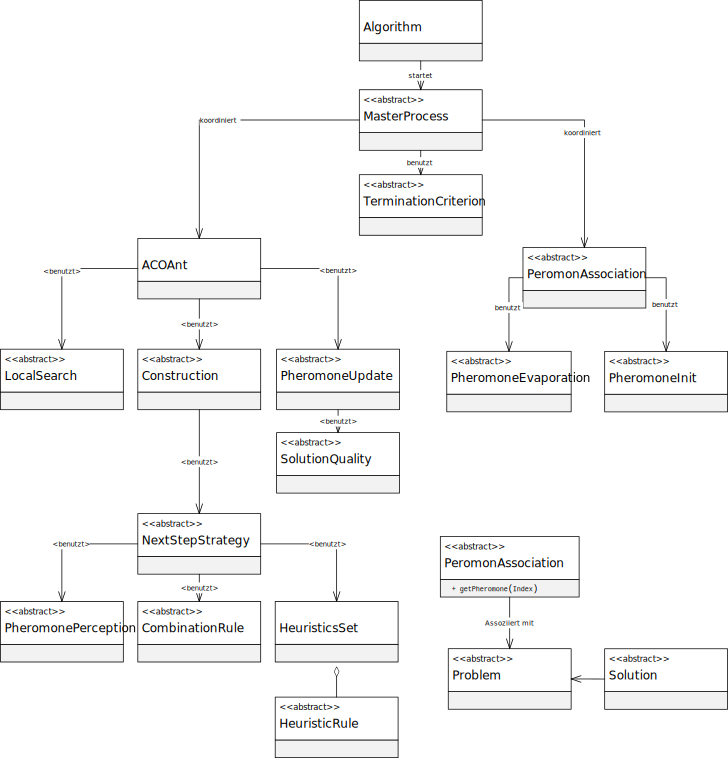

程序包 eu.andredick.aco
package eu.andredick.aco
ACO 组件 (推广并适应SCP)
组件:
- Algorithm (算法组件)
eu.andredick.aco.algorithm - Ant (蚂蚁组件)
eu.andredick.aco.ant - CombinationRule (组合功能)
eu.andredick.aco.combination - Construction (启发式构造)
eu.andredick.aco.construction - HeuristicRule (启发式信息)
eu.andredick.aco.heuristic - LocalSearch (局部搜索)
eu.andredick.aco.localsearch - MasterProcess (主进程)
eu.andredick.aco.masterprocess - NextStepStrategy (候选方案选择)
eu.andredick.aco.nextstep - PheromoneAssociation (信息素关联)
eu.andredick.aco.pheromoneassociation - PheromoneInit (信息素初始化)
eu.andredick.aco.pheromoneinit - PheromonePerception (信息素感知)
eu.andredick.aco.pheromoneperception - PheromoneUpdate (信息素标记)
eu.andredick.aco.pheromoneupdate - Problem (问题组件)
eu.andredick.aco.problem - SolutionQuality (质量函数)
eu.andredick.aco.solutionquality - TerminationCriterion (终止标准)
eu.andredick.aco.termination
UML 类图（广义层）:

-
类